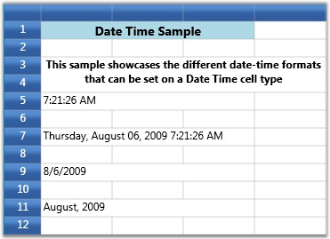

The Date Time cells incorporate DateTimeEdit controls in grid cells that will help you to interactively set a date and time value. The style properties below are applicable to this cell type.
Table 7: GridStyleInfo Property
|
GridStyleInfo Property |
Description |
|
CellType |
Set to “DateTimeEdit” |
|
DateTimePattern |
Sets the date-time pattern. The table below lists the available patterns with examples. |
|
MaxDateTime, MinDateTime |
Sets the maximum and minimum values for a DateTime cell. |
|
IsCalendarEnabled |
When true, enables the calendar popup |
|
IsWatchEnabled |
When true, enables the watch popup |
|
NoneDateText |
Specifies the text to be displayed when no date is set |
Table 8: Date and Time Pattern
|
Date and Time Pattern |
Example |
|
Short Date |
8/6/2009 |
|
Long Date |
Thursday, August 06, 2009 |
|
Long Time |
7:01:33 AM |
|
Short Time |
7:01 AM |
|
Full Date Time |
Thursday, August 06, 2009 7:01:33 AM |
|
MonthDay |
August 06 |
|
RFC1123 |
Thu, 06 Aug 2009 07:01:33 GMT |
|
Sortable Date Time |
2009-08-06T07:01:33 |
|
Universal Sortable Date Time |
2009-08-06 07:01:33Z |
|
Year Month |
(August, 2009 is correct)August, 2009 |
Setting Date and Time Cells with Different Date Time Patterns.
|
[C#]
grid.Model[5, 1].CellType = "DateTimeEdit"; grid.Model[5, 1].DateTimeEdit.DateTimePattern = DateTimePattern.LongTime; grid.Model[5, 1].CellValue = DateTime.Now;
grid.Model[7, 1].CellType = "DateTimeEdit"; grid.Model[7, 1].DateTimeEdit.DateTimePattern = DateTimePattern.FullDateTime; grid.Model[7, 1].CellValue = DateTime.Now;
grid.Model[9, 1].CellType = "DateTimeEdit"; grid.Model[9, 1].DateTimeEdit.DateTimePattern = DateTimePattern.ShortDate; grid.Model[9, 1].CellValue = DateTime.Now;
grid.Model[11, 1].CellType = "DateTimeEdit"; grid.Model[11, 1].DateTimeEdit.DateTimePattern = DateTimePattern.YearMonth; grid.Model[11, 1].CellValue = DateTime.Now; |
Output
The following output is generated using the code above.

Figure 28: DateTime Cell
 Note: For complete code, please refer to the
following browser sample.
Note: For complete code, please refer to the
following browser sample.
...\My Documents\Syncfusion\EssentialStudio\<Version Number>\WPF\Grid.WPF\Samples\3.5\WindowsSamples\Cell Types\Date Time Cell Demo